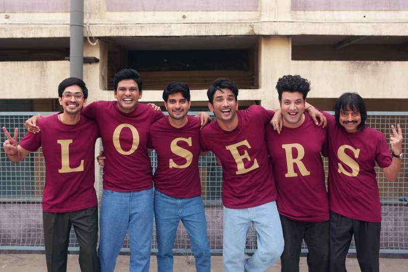

Our Team

1. Bhaskar Das, a talented UI/UX designer, bringing creativity to table.
2. Arjal Shivatata, a proficient web developer with a strong JavaScript skills.
3. Avinash Boruah, a Blender master making his 3D model back to life.
4. Biswajit Chetia, a tech enthusiast and database management expert.
5. Kuntalika Das, an analytic thinker in both literature and algorithm.
6. And let's not forget Snehashis Roy, a multitasker with expertise in project management.